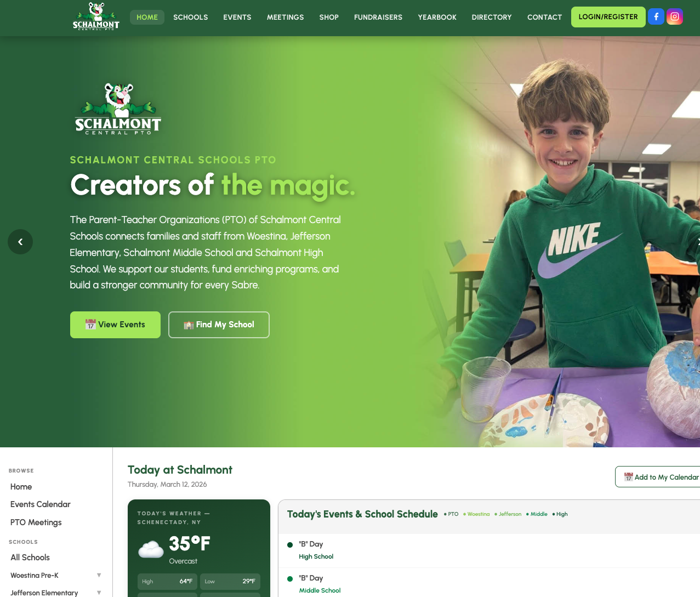
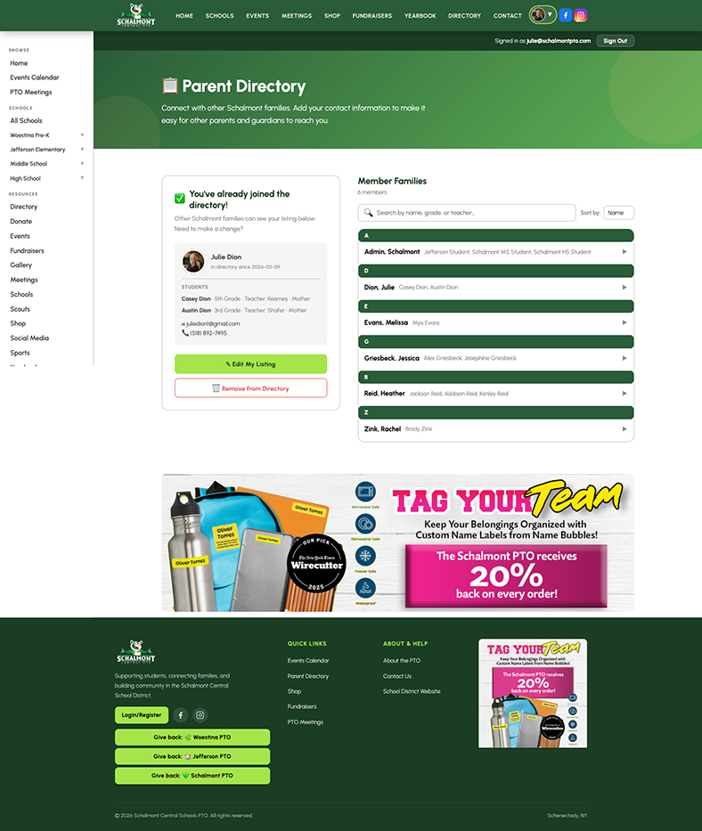
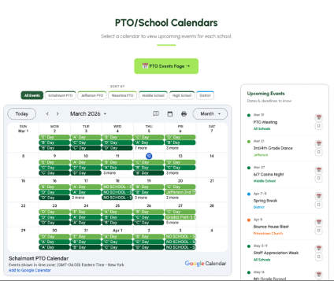
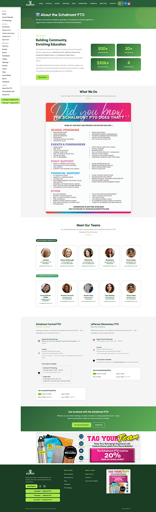
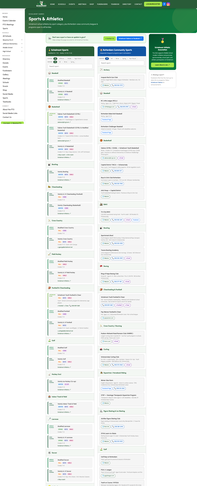
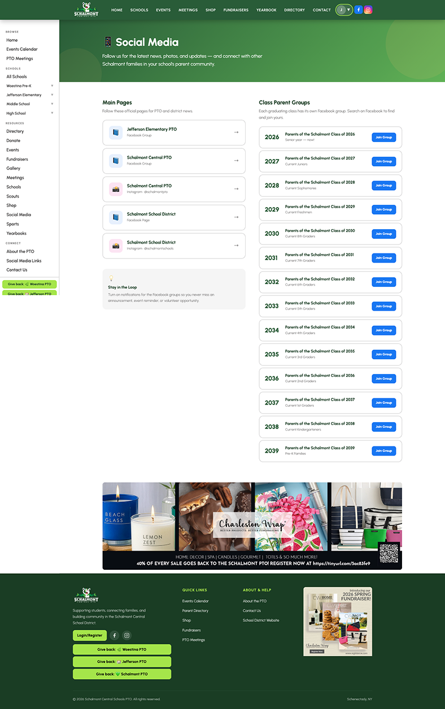
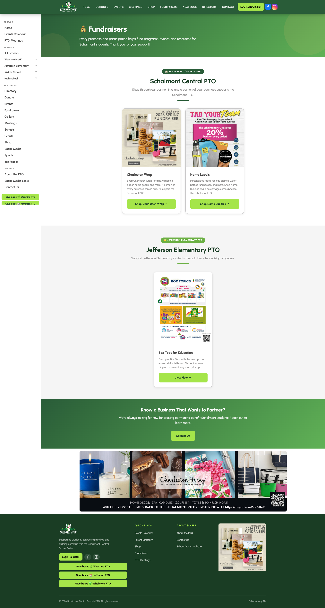
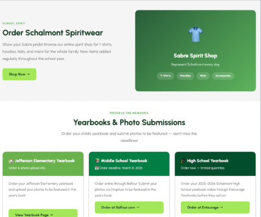

Schalmont PTO · Web Design & Development · 2026
Designed and built the Schalmont Central Schools PTO website from scratch — a community platform serving 4 schools, 2,000+ students, and the entire Schalmont district.
As Executive President of the Schalmont Central Schools PTO, I designed and built the district's community website from scratch — wearing every hat as designer, developer, and client. With event info scattered across Facebook and paper flyers, and no unified digital presence across four schools, I built a purpose-built platform in HTML, CSS, and JavaScript that could serve every family, at every school, in one place.
The site launched to immediate community response and became the go-to resource for the entire district — referenced at school board meetings, shared in teacher newsletters, and bookmarked by hundreds of families. It grew PTO social followership to 2,500+, directly supported over $60,000 in fundraising across two years, and gave a volunteer-run organization the kind of digital presence typically reserved for companies with full-time web teams.
Homepage, Directory, Events, and About — click any image to visit the live page.

District-wide entry point — weather, today's schedule, upcoming events, and quick links to every school.

Login-protected member directory with search, role-based access, and family listings by school.

Live Google Calendar embeds for all four schools with color-coded badges and iCal sync.

Mission, board members, team bios, and the story behind the organization.

School sports schedules, activities, and events organized by school and season.

Central hub linking all PTO and school Facebook groups — grew from zero to 2,500+ followers.

Partner fundraisers and school-specific campaigns — helping raise $60K+ across two school years.

Per-school yearbook ordering, photo upload deadlines, and direct links to Balfour and Entourage.
schalmontpto.com — the full, living version of this project.